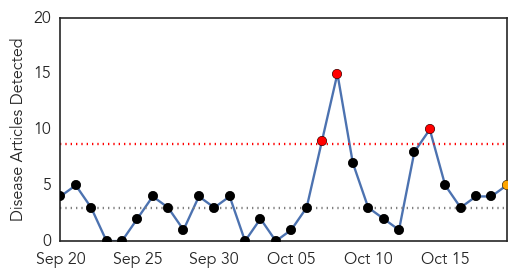
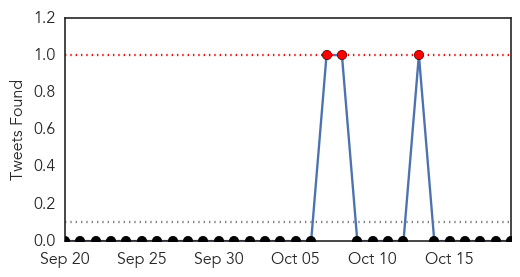
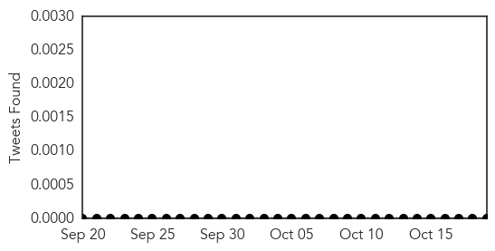

Swine Flu
30-Day Web Trend
3 alerts, 1 warnings

30-Day Twitter Trend
0 alerts, 0 warnings

Article Locations
Article Confidences
Top Articles:
- 0.999
- Swine flu isolation wards at Govt hospitals
- 0.997
- Varanasi govt hospitals brace up to fight Swine flu
- 0.994
- Even after first swine flu death, no guidelines issued
- 0.979
- Swine flu death in city sends health officials in a tizzy
- 0.761
- UK government admits swine flu vaccine causes brain damage, awards compensation to 60 families
Top Tweets:
-
No tweets found for Oct 19, 2015
Measles
30-Day Web Trend
1 alerts, 0 warnings

30-Day Twitter Trend
0 alerts, 0 warnings

Article Locations

Article Confidences

Top Articles:
Top Tweets:
-
No tweets found for Oct 19, 2015